Ground Control · Event coordinator · Account onboarding
Event coordinator · Step 01
Welcome to Ground Control Choose Get started for a new account. Returning users choose Log in.
/
Demo capture · Mobile web · Operational state may be simulated Ground Control · Event coordinator · Account onboarding
Event coordinator · Step 02
Create the account: email Enter your email and continue.
/sign-up
Demo capture · Mobile web · Operational state may be simulated Ground Control · Event coordinator · Account onboarding
Event coordinator · Step 03
Create the account: password Choose a password and create your account.
/sign-up
Demo capture · Mobile web · Operational state may be simulated Ground Control · Event coordinator · Account onboarding
Event coordinator · Step 04
Confirm the signup email Open the confirmation email, then return to log in. The email itself is outside the app.
/sign-up
Demo capture · Mobile web · Operational state may be simulated Ground Control · Event coordinator · Account onboarding
Event coordinator · Step 05
Log in after email confirmation Return after confirming the signup email and enter your email.
/sign-in
Demo capture · Mobile web · Operational state may be simulated Ground Control · Event coordinator · Account onboarding
Event coordinator · Step 06
Authenticate Enter your password to continue. The password is masked.
/sign-in
Demo capture · Mobile web · Operational state may be simulated Ground Control · Event coordinator · Account onboarding
Event coordinator · Step 07
Account onboarding: name Enter the name teammates should use.
/profile-onboarding
Demo capture · Mobile web · Operational state may be simulated Ground Control · Event coordinator · Account onboarding
Event coordinator · Step 08
Account onboarding: phone Add a contact phone number.
/profile-onboarding
Demo capture · Mobile web · Operational state may be simulated Ground Control · Event coordinator · Account onboarding
Event coordinator · Step 09
Account onboarding: emergency contact Add an emergency contact name and phone number.
/profile-onboarding
Demo capture · Mobile web · Operational state may be simulated Ground Control · Event coordinator · Account onboarding
Event coordinator · Step 10
Account onboarding: experience Choose whether this is your first event or you have crewed before.
/profile-onboarding
Demo capture · Mobile web · Operational state may be simulated Ground Control · Event coordinator · Account onboarding
Event coordinator · Step 11
Account onboarding: ready Review the saved setup and continue to Find my first event.
/profile-onboarding
Demo capture · Mobile web · Operational state may be simulated Ground Control · Event coordinator · Create your workspace
Event coordinator · Step 12
Create a coordinator workspace After shared account onboarding, create your organisation from Profile.
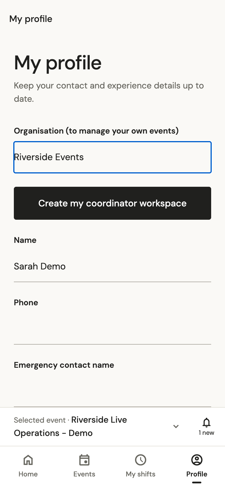
/profile
Demo capture · Mobile web · Operational state may be simulated Ground Control · Event coordinator · Create your workspace
Event coordinator · Step 13
Coordinator home Review live and preparing events; choose Riverside.
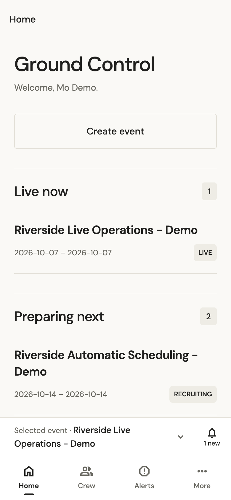
/coordinator
Demo capture · Mobile web · Operational state may be simulated Ground Control · Event coordinator · Create an event
Event coordinator · Step 14
Choose the organisation Choose the organisation responsible for this event.
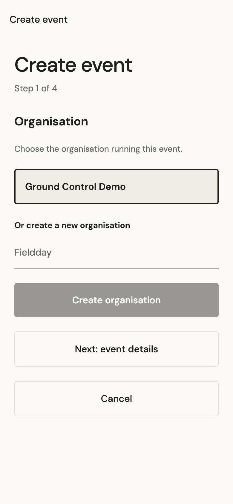
/events/new
Demo capture · Mobile web · Operational state may be simulated Ground Control · Event coordinator · Create an event
Event coordinator · Step 15
Name the event and venue Fill the event name and venue; expand optional details if needed.
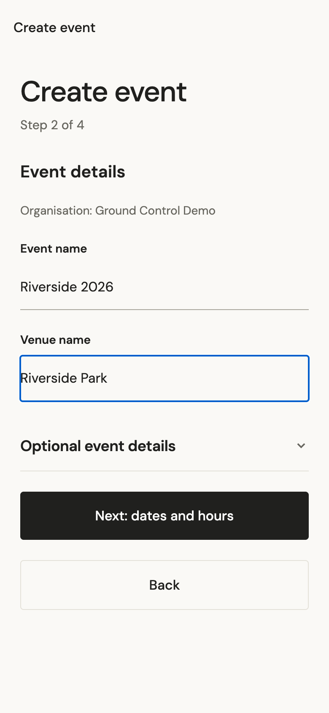
/events/new
Demo capture · Mobile web · Operational state may be simulated Ground Control · Event coordinator · Create an event
Event coordinator · Step 16
Dates and operating hours Set local event dates, opening hours and timezone.
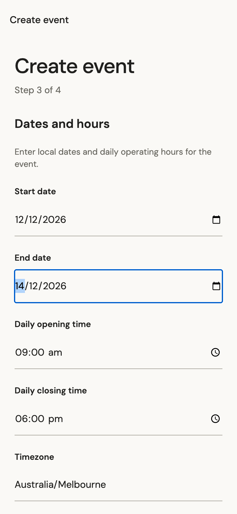
/events/new
Demo capture · Mobile web · Operational state may be simulated Ground Control · Event coordinator · Create an event
Event coordinator · Step 17
Review the draft event Check the organisation, venue and dates before creating the draft.
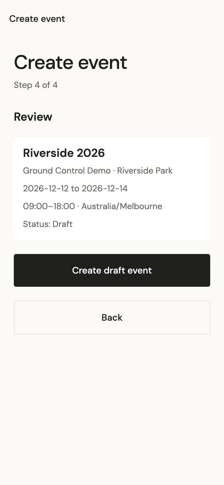
/events/new
Demo capture · Mobile web · Operational state may be simulated Ground Control · Event coordinator · Describe and support the operating plan
Event coordinator · Step 18
Describe the operating plan Enter event requirements and save the setup description.
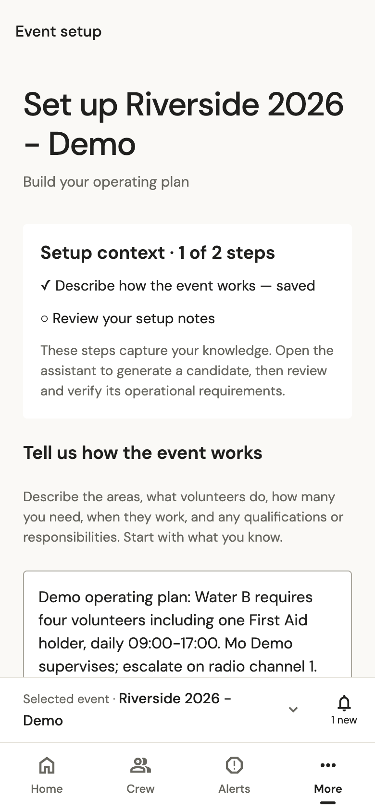
/events/d0000000-0000-4000-8000-000000000001/setup
Demo capture · Mobile web · Operational state may be simulated Ground Control · Event coordinator · Describe and support the operating plan
Event coordinator · Step 19
Write the event brief Save clear operating requirements before asking AI to draft the plan.
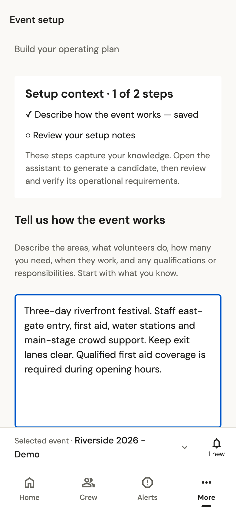
/events/d0000000-0000-4000-8000-000000000001/setup
Demo capture · Mobile web · Operational state may be simulated Ground Control · Event coordinator · Describe and support the operating plan
Event coordinator · Step 20
Supporting documents Choose and upload original plans, procedures or supporting documents.
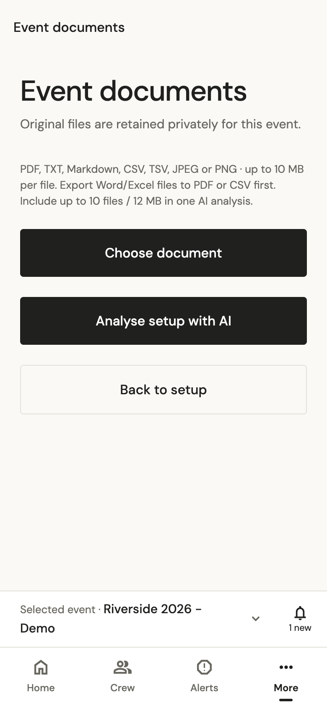
/events/d0000000-0000-4000-8000-000000000001/documents
Demo capture · Mobile web · Operational state may be simulated Ground Control · Event coordinator · Describe and support the operating plan
Event coordinator · Step 21
Select a supporting document Choose the original and set its title and document type before uploading.
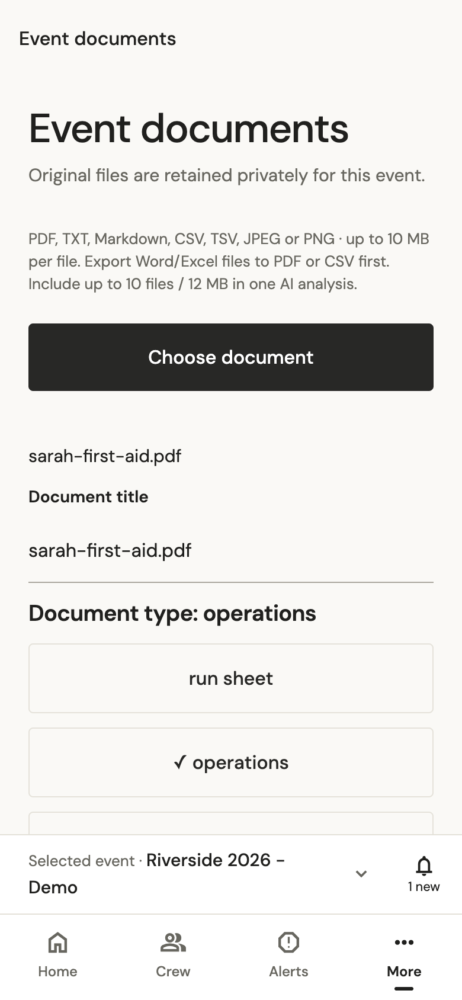
/events/d0000000-0000-4000-8000-000000000001/documents
Demo capture · Mobile web · Operational state may be simulated Ground Control · Event coordinator · Draft and review the AI proposal
Event coordinator · Step 22
AI planning assistant Generate a candidate operating plan and answer any clarification questions.
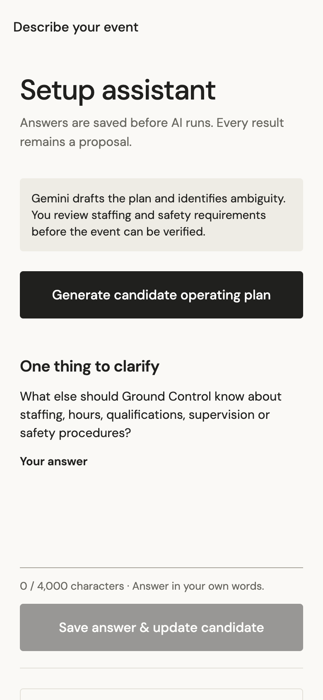
/events/d0000000-0000-4000-8000-000000000001/assistant
Demo capture · Mobile web · Operational state may be simulated Ground Control · Event coordinator · Draft and review the AI proposal
Event coordinator · Step 23
Answer a planning question Clarify hours, staffing, qualifications or escalation; answers are saved before AI runs.
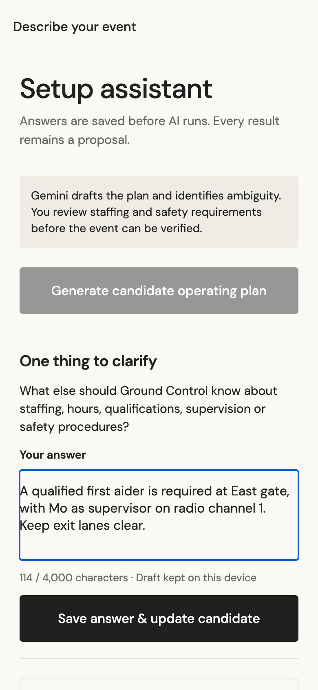
/events/d0000000-0000-4000-8000-000000000001/assistant
Demo capture · Mobile web · Operational state may be simulated Ground Control · Event coordinator · Draft and review the AI proposal
Event coordinator · Step 24
Candidate plan ready for review A completed AI job produces a proposal and still requires human review.
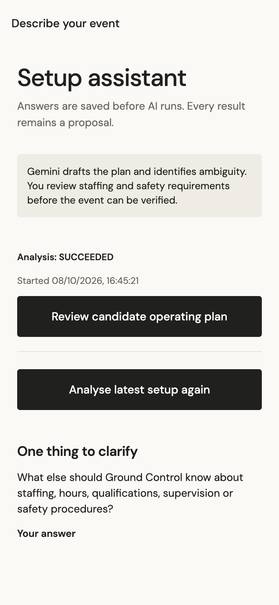
/events/d0000000-0000-4000-8000-000000000001/assistant
Demo capture · Mobile web · Operational state may be simulated Ground Control · Event coordinator · Draft and review the AI proposal
Event coordinator · Step 25
Inspect the unapplied AI candidate Check sources and proposed staffing before applying an unconfirmed draft.
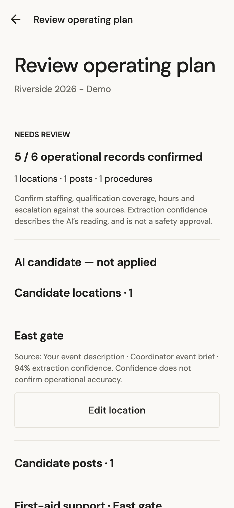
/events/d0000000-0000-4000-8000-000000000001/review
Demo capture · Mobile web · Operational state may be simulated Ground Control · Event coordinator · Draft and review the AI proposal
Event coordinator · Step 26
Apply the reviewed draft Applying a candidate creates an unconfirmed draft; verification remains a separate human step.
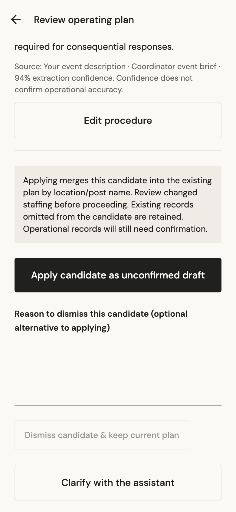
/events/d0000000-0000-4000-8000-000000000001/review
Demo capture · Mobile web · Operational state may be simulated Ground Control · Event coordinator · Correct the site and procedures
Event coordinator · Step 27 · When needed
Locations and staffing posts Review areas, posts, coverage and qualification requirements.
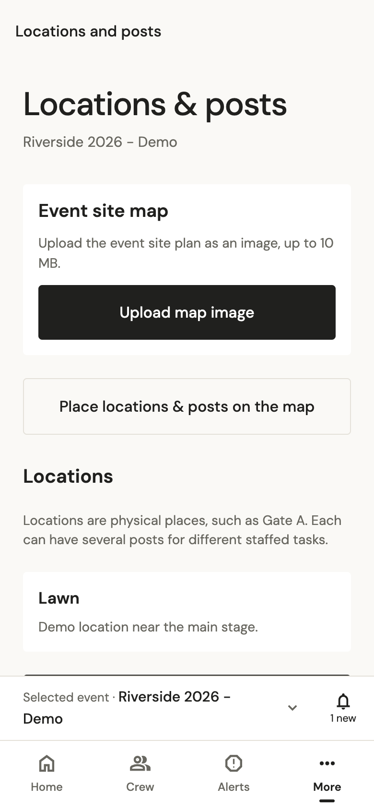
/events/d0000000-0000-4000-8000-000000000001/site
Demo capture · Mobile web · Operational state may be simulated Ground Control · Event coordinator · Correct the site and procedures
Event coordinator · Step 28 · When needed
Add or correct a location Use the manual editor to make the operating plan accurate.
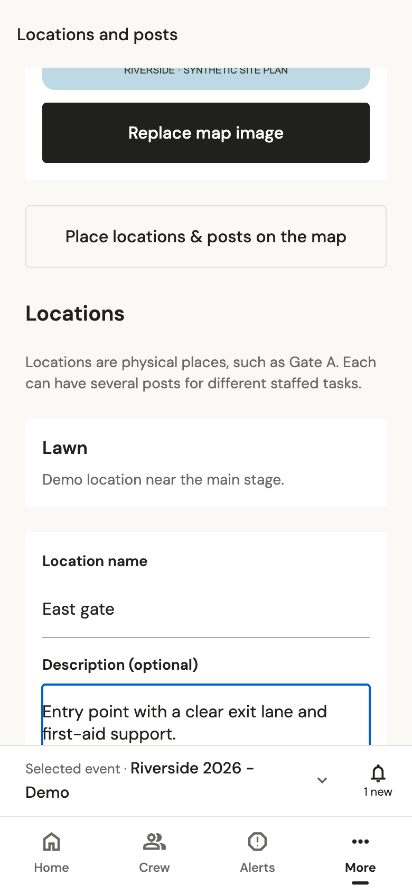
/events/d0000000-0000-4000-8000-000000000001/site
Demo capture · Mobile web · Operational state may be simulated Ground Control · Event coordinator · Correct the site and procedures
Event coordinator · Step 29 · When needed
Map with positioned posts View areas, staffing posts and check-in zones on a site plan.
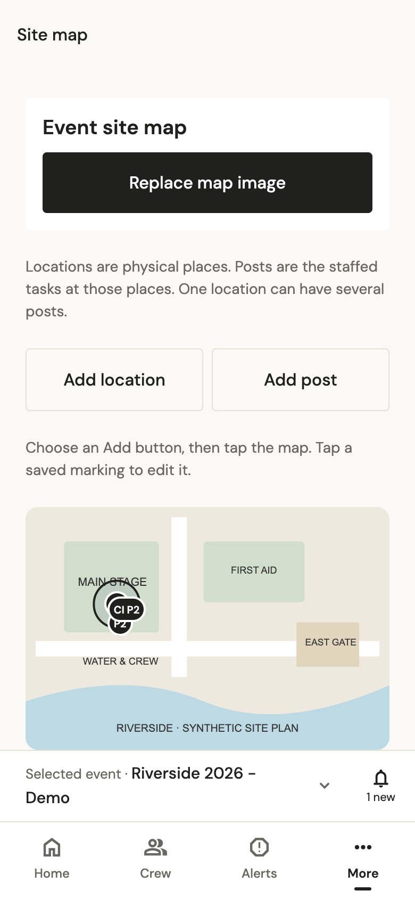
/events/d0000000-0000-4000-8000-000000000001/map
Demo capture · Mobile web · Operational state may be simulated Ground Control · Event coordinator · Correct the site and procedures
Event coordinator · Step 30 · When needed
Edit an area on the map Review the location position, radius and details before saving.
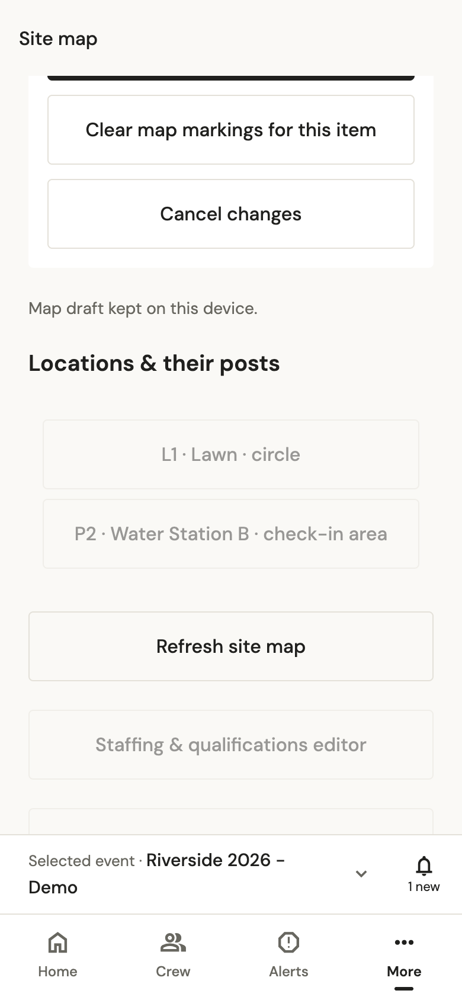
/events/d0000000-0000-4000-8000-000000000001/map
Demo capture · Mobile web · Operational state may be simulated Ground Control · Event coordinator · Correct the site and procedures
Event coordinator · Step 31 · When needed
Operating hours and procedures Confirm operating windows and the procedures volunteers must acknowledge.
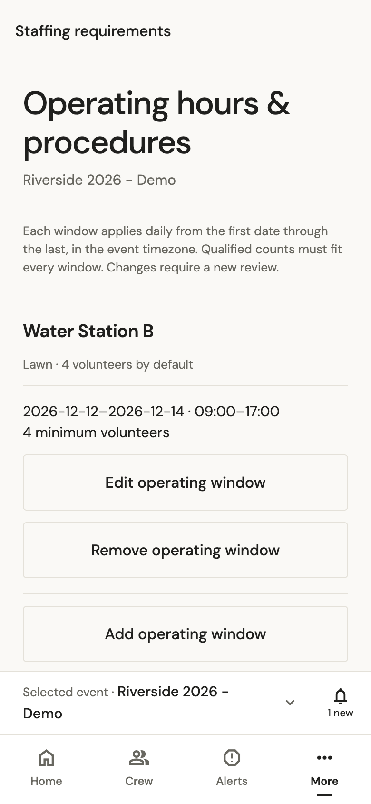
/events/d0000000-0000-4000-8000-000000000001/operations
Demo capture · Mobile web · Operational state may be simulated Ground Control · Event coordinator · Correct the site and procedures
Event coordinator · Step 32 · When needed
Edit the volunteer procedure Keep the briefing concise and state who owns escalation decisions.
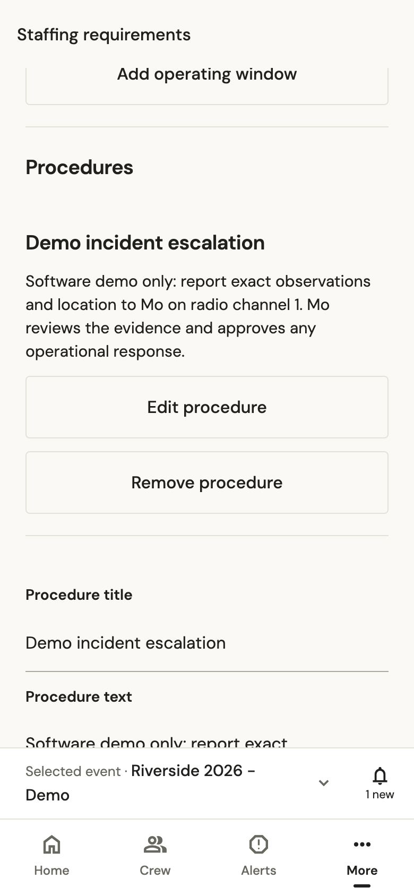
/events/d0000000-0000-4000-8000-000000000001/operations
Demo capture · Mobile web · Operational state may be simulated Ground Control · Event coordinator · Verify and open recruitment
Event coordinator · Step 33
Review the operating plan Review proposed records, resolve issues and verify the plan before recruitment.
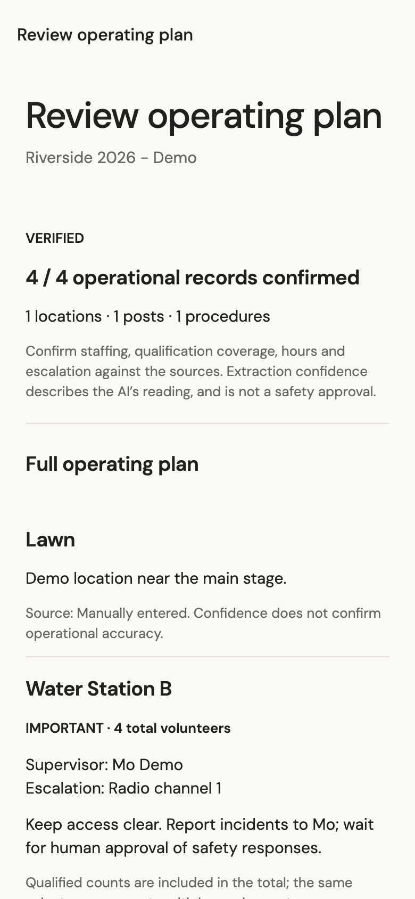
/events/d0000000-0000-4000-8000-000000000001/review
Demo capture · Mobile web · Operational state may be simulated Ground Control · Event coordinator · Verify and open recruitment
Event coordinator · Step 34
Verify the operating plan Confirm the reviewed operating records and verify the model before recruitment.
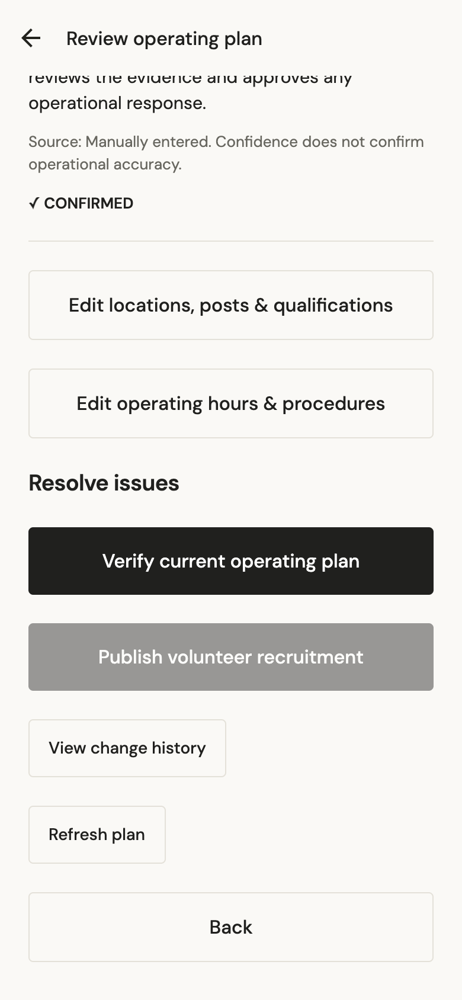
/events/d0000000-0000-4000-8000-000000000001/review
Demo capture · Mobile web · Operational state may be simulated Ground Control · Event coordinator · Verify and open recruitment
Event coordinator · Step 35
Recruitment and join code Publish recruitment after verification; share the join code with volunteers.
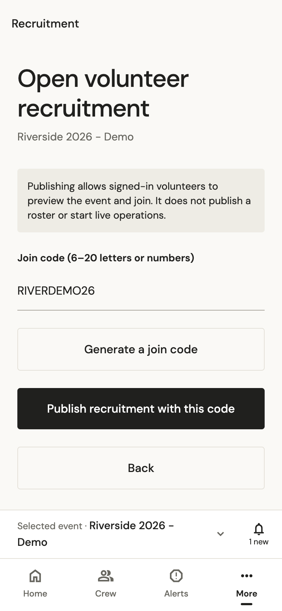
/events/d0000000-0000-4000-8000-000000000001/publish
Demo capture · Mobile web · Operational state may be simulated Ground Control · Event coordinator · Verify and open recruitment
Event coordinator · Step 36
Event team and permissions Find a member and review their event role.
/events/d0000000-0000-4000-8000-000000000001/team
Demo capture · Mobile web · Operational state may be simulated Ground Control · Event coordinator · Verify and open recruitment
Event coordinator · Step 37
Review event access Set roles only for people who need coordinator or safety-lead permissions.
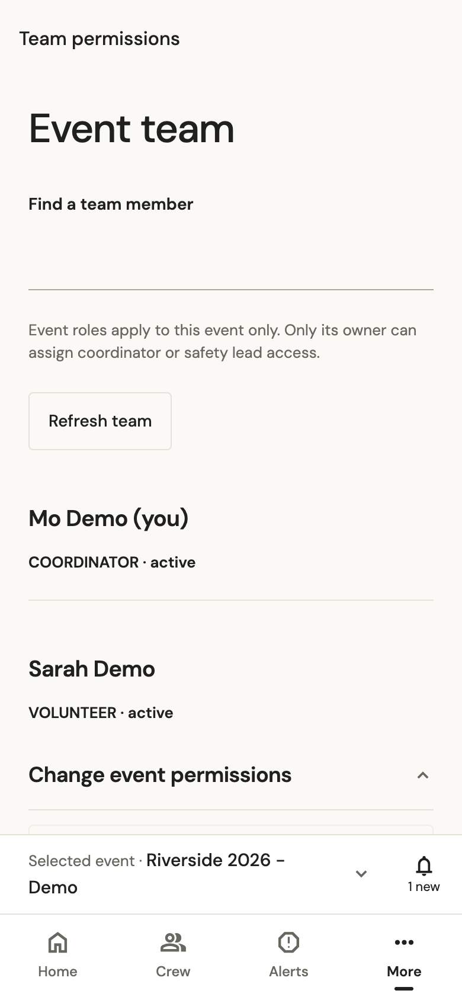
/events/d0000000-0000-4000-8000-000000000001/team
Demo capture · Mobile web · Operational state may be simulated Ground Control · Event coordinator · Review volunteer qualifications
Event coordinator · Step 38
Coordinator updates Open qualification warnings or other operational updates.
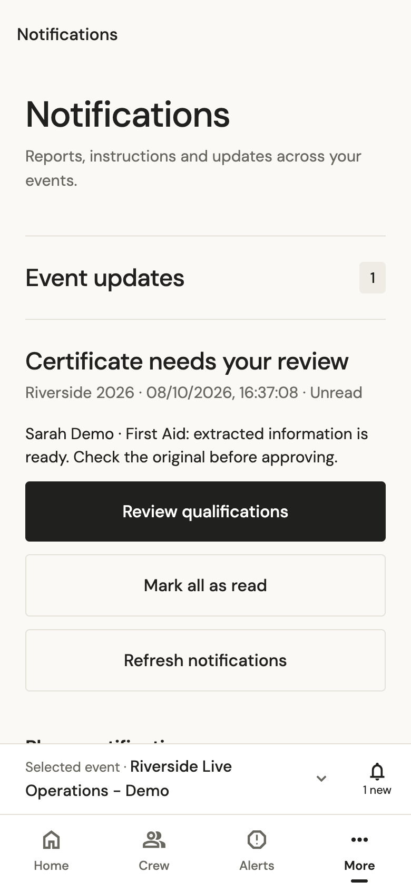
/notifications
Demo capture · Mobile web · Operational state may be simulated Ground Control · Event coordinator · Review volunteer qualifications
Event coordinator · Step 39
Crew qualifications Inspect extracted certificate details before human approval.
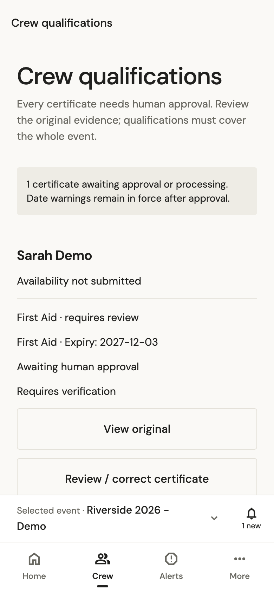
/events/d0000000-0000-4000-8000-000000000001/qualifications
Demo capture · Mobile web · Operational state may be simulated Ground Control · Event coordinator · Review volunteer qualifications
Event coordinator · Step 40
Human certificate review Compare extracted fields with the original; record the review before approving.
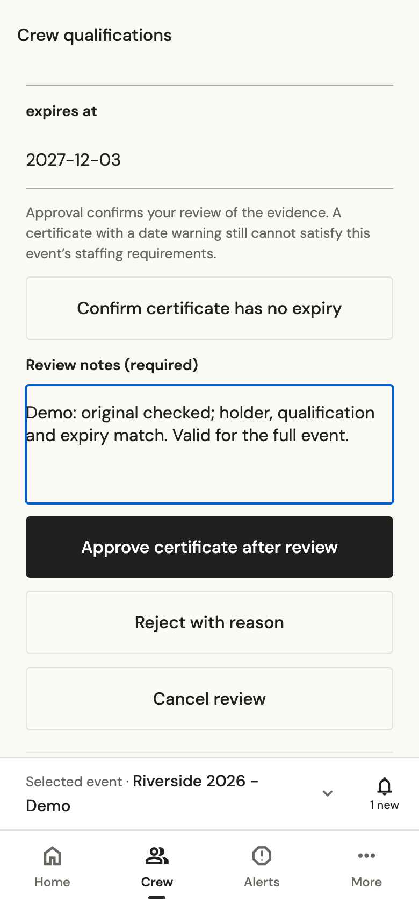
/events/d0000000-0000-4000-8000-000000000001/qualifications
Demo capture · Mobile web · Operational state may be simulated Ground Control · Event coordinator · Review volunteer qualifications
Event coordinator · Step 41
Certificate approved Human approval is recorded; event-date validity remains a separate deterministic check.
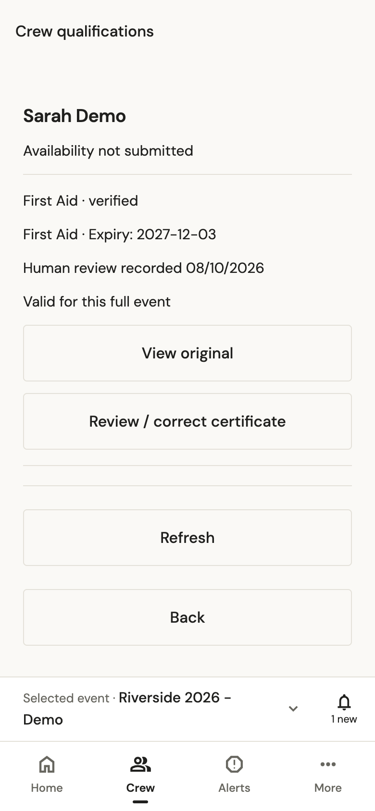
/events/d0000000-0000-4000-8000-000000000001/qualifications
Demo capture · Mobile web · Operational state may be simulated Ground Control · Event coordinator · Generate, review and publish shifts
Event coordinator · Step 42
Review rest and break rules Set scheduling limits before generating assignments.
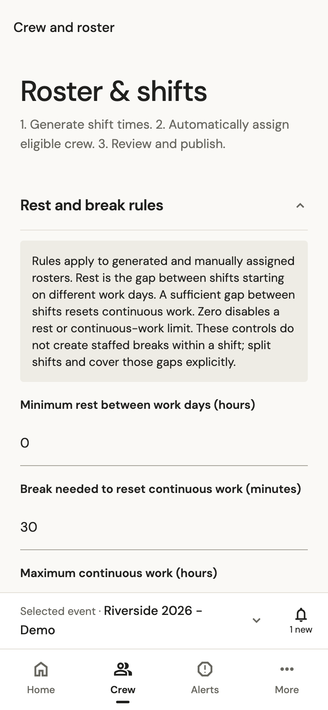
/events/d0000000-0000-4000-8000-000000000001/roster
Demo capture · Mobile web · Operational state may be simulated Ground Control · Event coordinator · Generate, review and publish shifts
Event coordinator · Step 43
Generate shift times Start from the verified operating windows and choose a shift length.
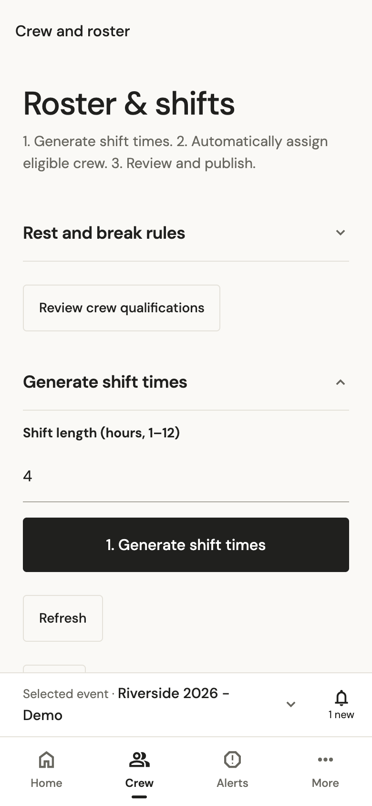
/events/d0000000-0000-4000-8000-000000000001/roster
Demo capture · Mobile web · Operational state may be simulated Ground Control · Event coordinator · Generate, review and publish shifts
Event coordinator · Step 44
Review the shift draft See staffing requirements and any unfilled places before assigning crew.
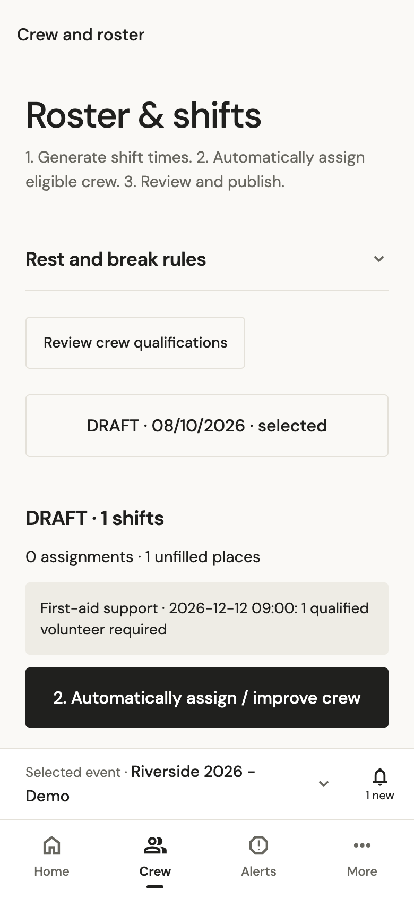
/events/d0000000-0000-4000-8000-000000000001/roster
Demo capture · Mobile web · Operational state may be simulated Ground Control · Event coordinator · Generate, review and publish shifts
Event coordinator · Step 45
Review the assigned candidate Deterministic assignment checks availability, qualifications and coverage.
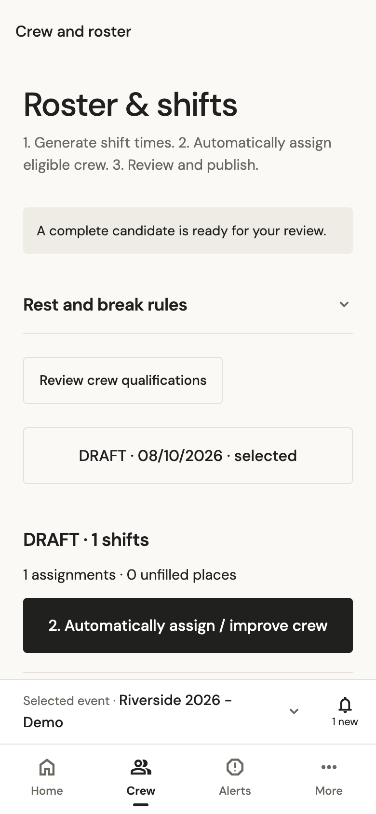
/events/d0000000-0000-4000-8000-000000000001/roster
Demo capture · Mobile web · Operational state may be simulated Ground Control · Event coordinator · Generate, review and publish shifts
Event coordinator · Step 46
Confirm roster publication Confirm that reviewed assignments should be shared with volunteers.
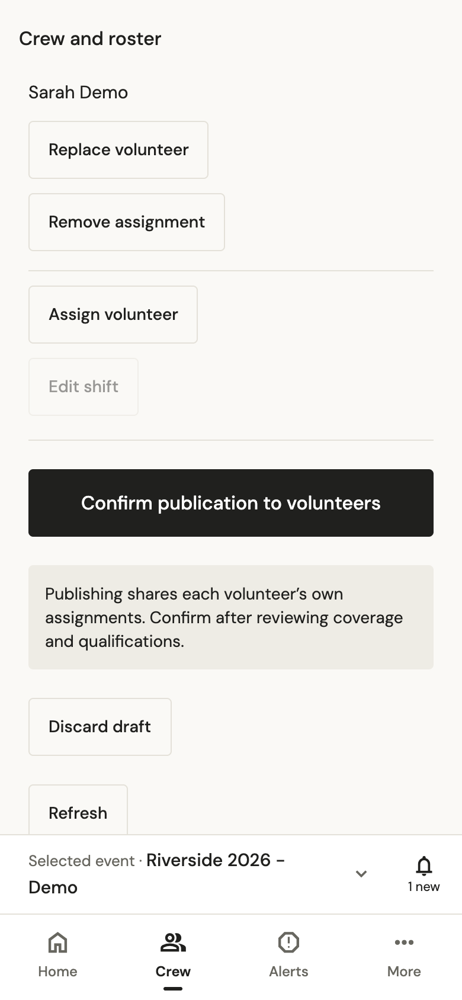
/events/d0000000-0000-4000-8000-000000000001/roster
Demo capture · Mobile web · Operational state may be simulated Ground Control · Event coordinator · Generate, review and publish shifts
Event coordinator · Step 47
Roster published Crew can now view their own assignments.
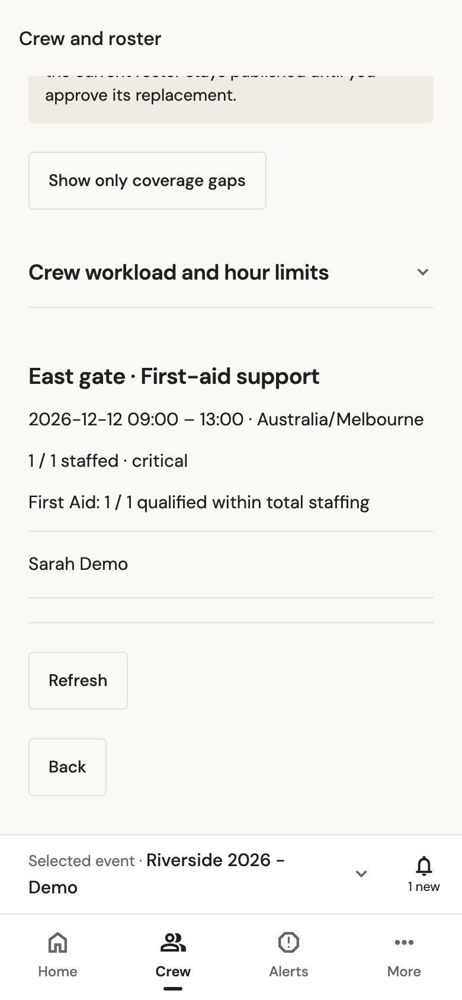
/events/d0000000-0000-4000-8000-000000000001/roster
Demo capture · Mobile web · Operational state may be simulated Ground Control · Event coordinator · Start live operations
Event coordinator · Step 48
Event overview and next step Use the event stage to decide whether to finish setup, review crew or open Alerts.
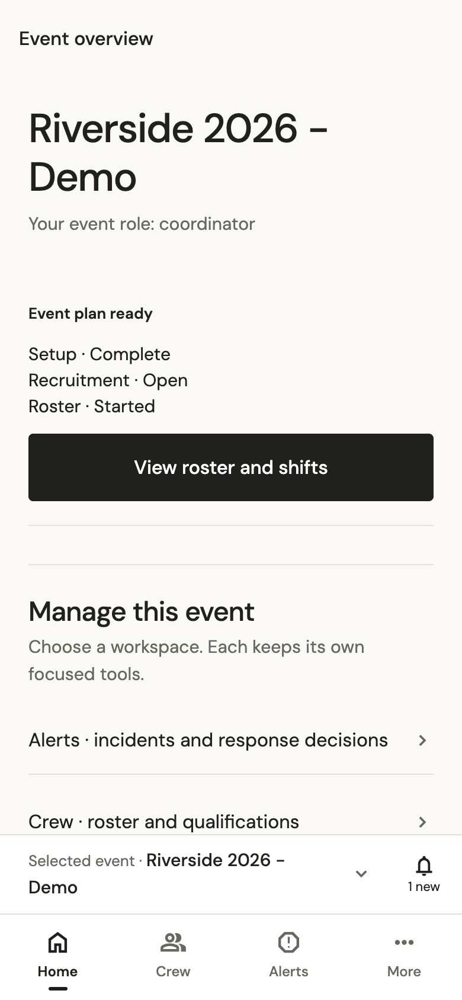
/events/d0000000-0000-4000-8000-000000000001
Demo capture · Mobile web · Operational state may be simulated Ground Control · Event coordinator · Start live operations
Event coordinator · Step 49
Check readiness and start operations Check acknowledgements and certificates; choose a no-show grace period before starting.
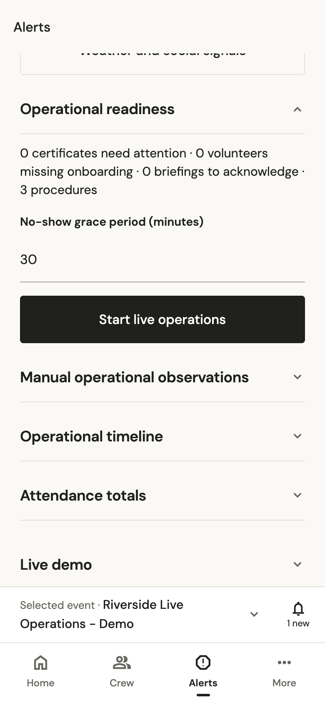
/events/d1000000-0000-4000-8000-000000000001/live
Demo capture · Mobile web · Operational state may be simulated Ground Control · Event coordinator · Review incidents and emerging risks
Event coordinator · Step 50
Prioritise incidents and risks Review urgency colours, severity labels and the most urgent incident first.
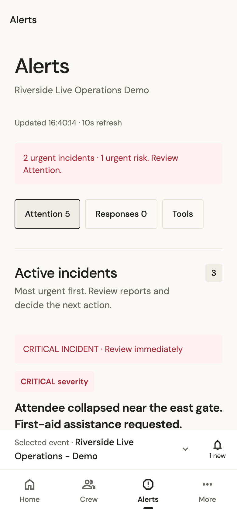
/events/d1000000-0000-4000-8000-000000000001/live
Demo capture · Mobile web · Operational state may be simulated Ground Control · Event coordinator · Review incidents and emerging risks
Event coordinator · Step 51
Read the original and AI interpretation Preserve the original report; confirm or correct the AI interpretation before responding.
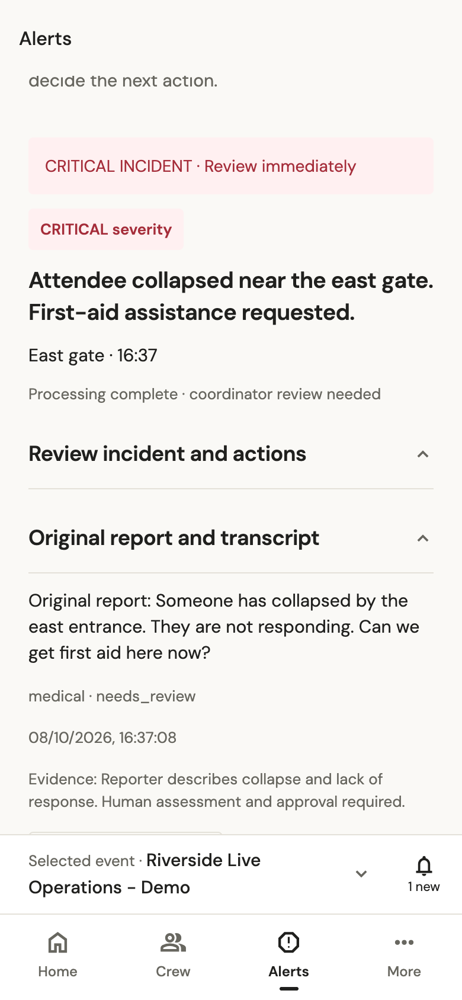
/events/d1000000-0000-4000-8000-000000000001/live
Demo capture · Mobile web · Operational state may be simulated Ground Control · Event coordinator · Review incidents and emerging risks
Event coordinator · Step 52
Assess emerging risk evidence Read supporting reports and confirm conditions on site.
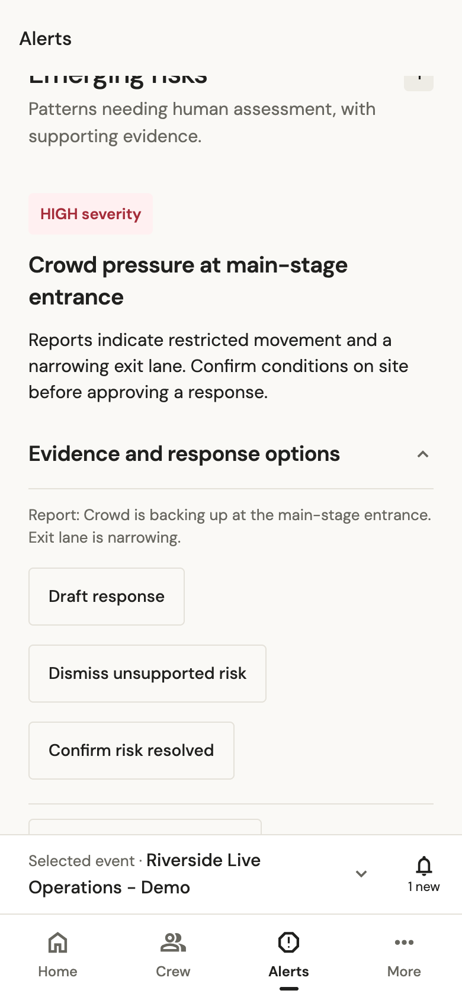
/events/d1000000-0000-4000-8000-000000000001/live
Demo capture · Mobile web · Operational state may be simulated Ground Control · Event coordinator · Use supporting operational tools
Event coordinator · Step 53 · When needed
Crowd control Inspect advisory camera estimates and crowding alerts; verify on the ground.
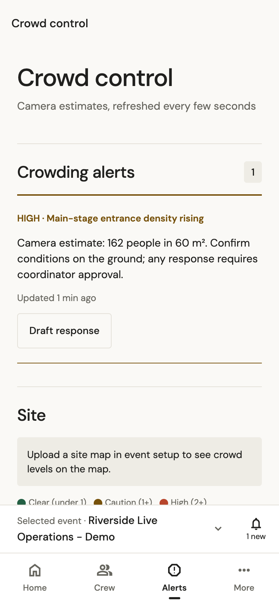
/events/d1000000-0000-4000-8000-000000000001/crowd
Demo capture · Mobile web · Operational state may be simulated Ground Control · Event coordinator · Use supporting operational tools
Event coordinator · Step 54 · When needed
Crowd estimates on the site map Read density estimates alongside their site location and freshness.
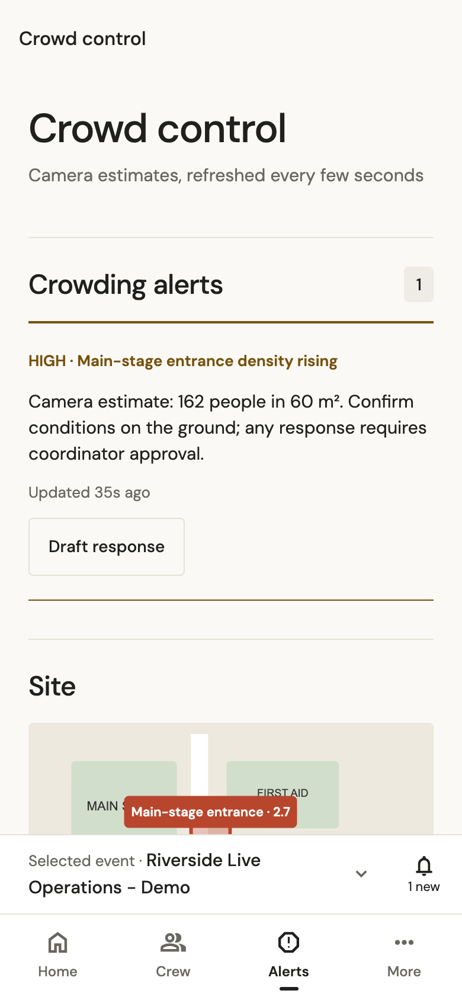
/events/d1000000-0000-4000-8000-000000000001/crowd
Demo capture · Mobile web · Operational state may be simulated Ground Control · Event coordinator · Use supporting operational tools
Event coordinator · Step 55 · When needed
Camera reading and trend Review count, density, trend and freshness before requesting a response.
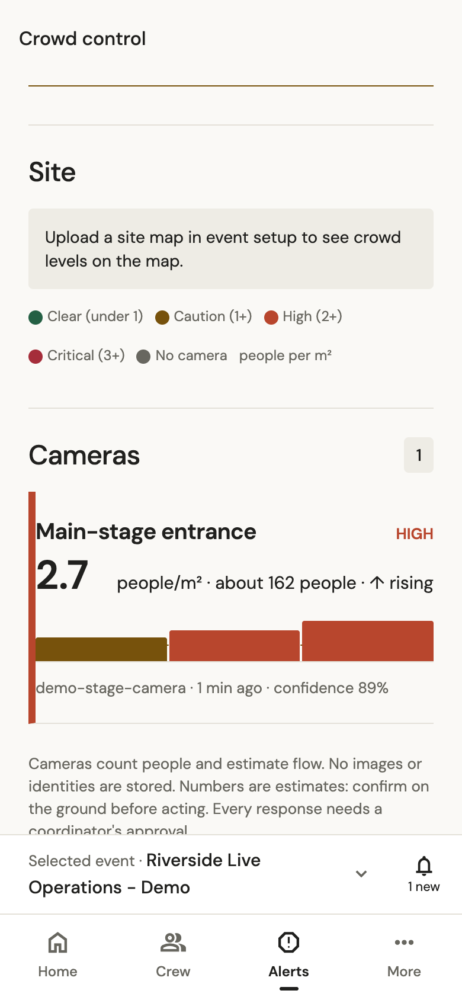
/events/d1000000-0000-4000-8000-000000000001/crowd
Demo capture · Mobile web · Operational state may be simulated Ground Control · Event coordinator · Use supporting operational tools
Event coordinator · Step 56 · When needed
Review modelled weather Read current advisory conditions and check local procedures.
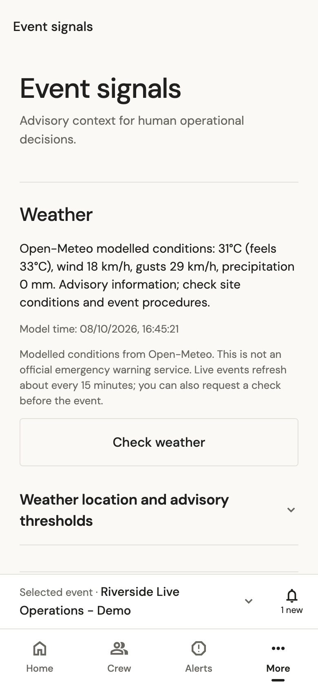
/events/d1000000-0000-4000-8000-000000000001/signals
Demo capture · Mobile web · Operational state may be simulated Ground Control · Event coordinator · Use supporting operational tools
Event coordinator · Step 57 · When needed
Demo social feed Original social posts remain synthetic and unverified.
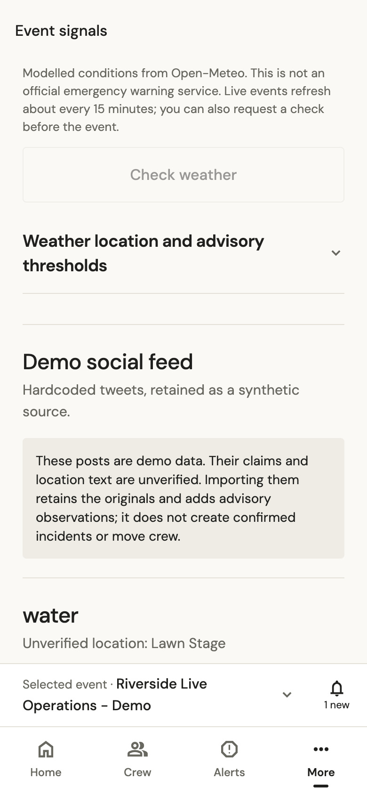
/events/d1000000-0000-4000-8000-000000000001/signals
Demo capture · Mobile web · Operational state may be simulated Ground Control · Event coordinator · Use supporting operational tools
Event coordinator · Step 58 · When needed
Record a measured site observation Add the location and observed facts so the risk review has a grounded source.
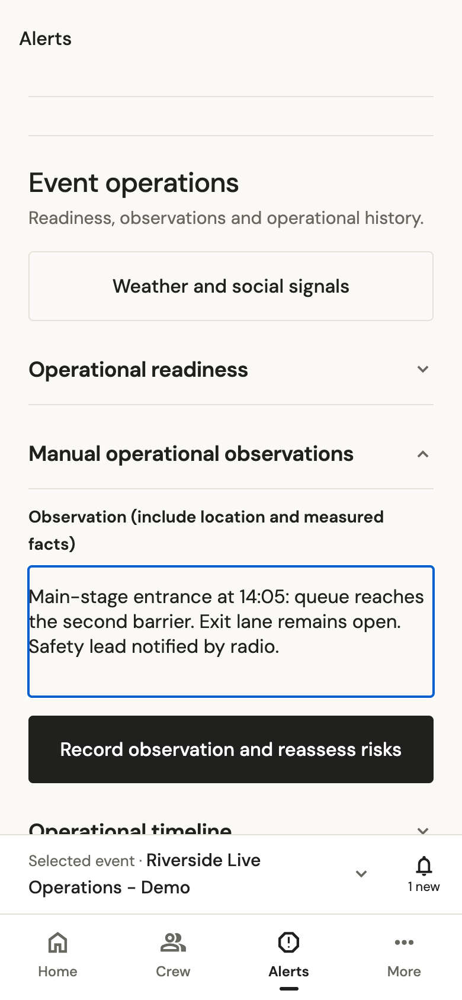
/events/d1000000-0000-4000-8000-000000000001/live
Demo capture · Mobile web · Operational state may be simulated Ground Control · Event coordinator · Use supporting operational tools
Event coordinator · Step 59 · When needed
Review operational history Keep incident receipt, human decisions and assignment changes visible.
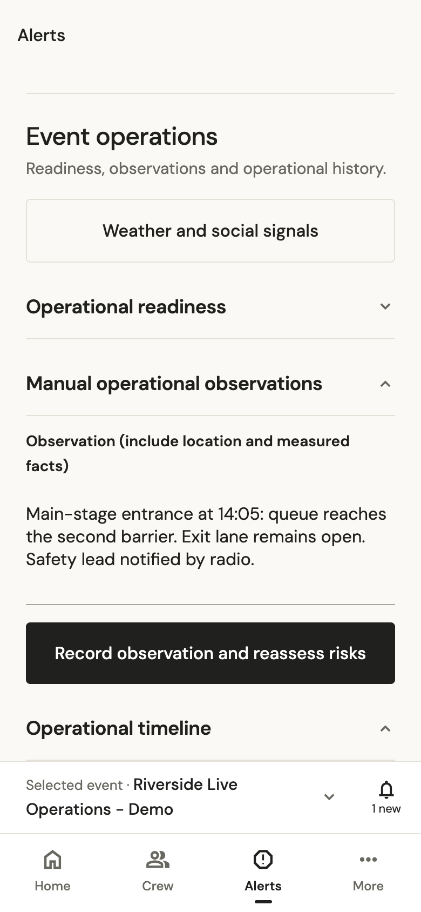
/events/d1000000-0000-4000-8000-000000000001/live
Demo capture · Mobile web · Operational state may be simulated Ground Control · Event coordinator · Use supporting operational tools
Event coordinator · Step 60 · When needed
Event tools Find setup, site, recruitment and operational tools in grouped sections.
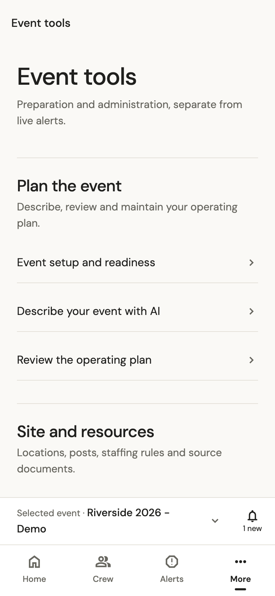
/events/d0000000-0000-4000-8000-000000000001/more
Demo capture · Mobile web · Operational state may be simulated Ground Control · Event coordinator · Review and approve a response when needed
Event coordinator · Step 61 · When needed
Review the proposed response AI drafts a response; no crew move occurs until a person approves.
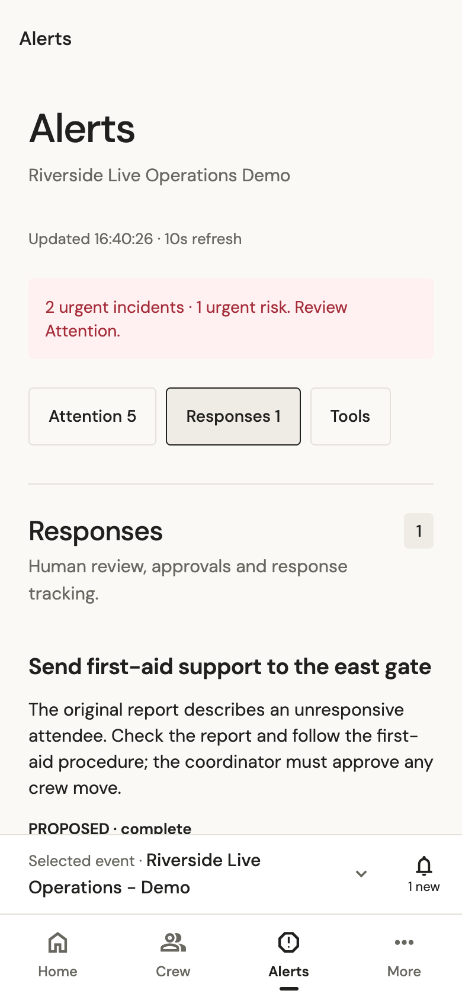
/events/d1000000-0000-4000-8000-000000000001/live
Demo capture · Mobile web · Operational state may be simulated Ground Control · Event coordinator · Review and approve a response when needed
Event coordinator · Step 62 · When needed
Select eligible crew Review destination, instructions, qualifications and current coverage.
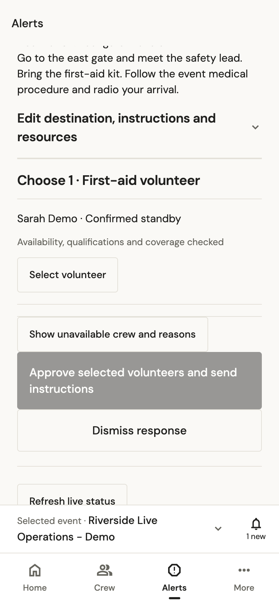
/events/d1000000-0000-4000-8000-000000000001/live
Demo capture · Mobile web · Operational state may be simulated Ground Control · Event coordinator · Review and approve a response when needed
Event coordinator · Step 63 · When needed
Understand unavailable crew Blocked candidates show the constraint that prevents a safe move.
/events/d1000000-0000-4000-8000-000000000001/live
Demo capture · Mobile web · Operational state may be simulated Ground Control · Event coordinator · Review and approve a response when needed
Event coordinator · Step 64 · When needed
Approve the chosen response Read who will move and approve the selected volunteer; source coverage is rechecked.
/events/d1000000-0000-4000-8000-000000000001/live
Demo capture · Mobile web · Operational state may be simulated Ground Control · Event coordinator · Review and approve a response when needed
Event coordinator · Step 65 · When needed
Track the instruction Review the approved response and the volunteer’s acknowledgement status.
/events/d1000000-0000-4000-8000-000000000001/live
Demo capture · Mobile web · Operational state may be simulated Ground Control · Event coordinator · Complete the response and close the event
Event coordinator · Step 66
Confirm response completion Review field updates and record completion notes.
/events/d1000000-0000-4000-8000-000000000001/live
Demo capture · Mobile web · Operational state may be simulated Ground Control · Event coordinator · Complete the response and close the event
Event coordinator · Step 67
Review the event summary Edit the AI draft, confirm follow-up and close the event yourself.
/events/d1000000-0000-4000-8000-000000000001/live
Demo capture · Mobile web · Operational state may be simulated Ground Control · Event coordinator · Complete the response and close the event
Event coordinator · Step 68
Event closed Event closeout is confirmed while the operational record remains available.
/events/d1000000-0000-4000-8000-000000000001
Demo capture · Mobile web · Operational state may be simulated